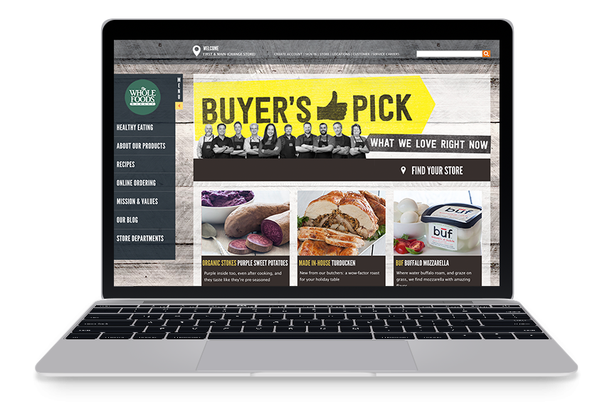
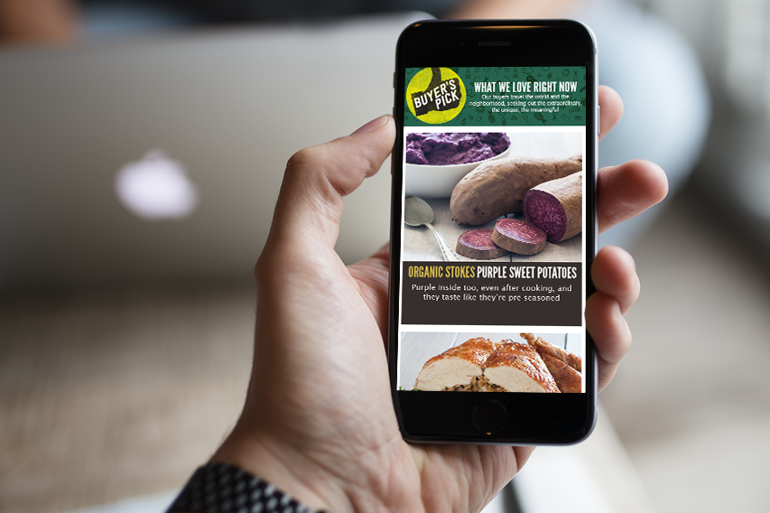
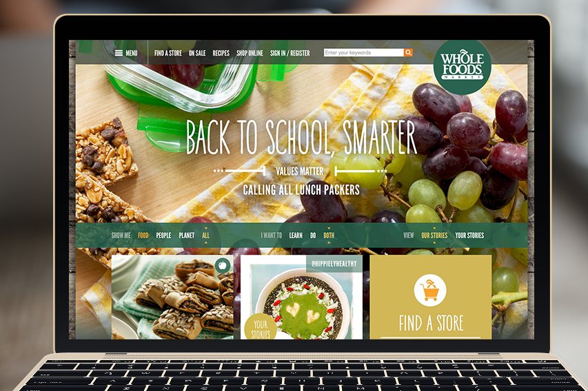

At Whole Foods I was responsible for creating visually engaging and innovative web-based and mobile products. Bringing concepts to life and seeing them through from conception to completion, cultivating bonds between customers and brands, intuit human response to visuals of all kinds. Handling multiple projects of various scopes and depth across multiple teams and departments including UX, Digital, Marketing, Visual and Graphic.
- Crafting graphic elements, assets, and visual treatments that adapt and flow with responsive design systems
- Partnering with front-end developers and create HTML and CSS-friendly designs
- Producing brand standards and style guides for creating interactive, user-centric products
- Keeping of the brand look and feel and ensuring all creative broadcast across all channels lives up to the highest quality of the company’s visual standards
-
28 July 2015
-
Client:
Whole Foods Market
-
Posted by:
PMP


